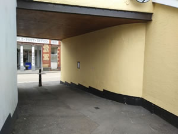

Our Special Moment at The Big Reveal


On 28th June a large and enthusiastic crowd gathered in Glanaman Square for the unveiling of the Amman Valley Community Mural. With a drum roll provided by our local drummers, the red ribbon was cut by our oldest and youngest contributors, Jan Slade and James Brook, symbolically representing everyone who took part. As the veil dropped, it revealed a breathtaking mosaic—a vibrant reflection of the community that created it. Thank you to all those who came out to celebrate with us.
This isn’t just any public artwork; it was a shared creation. Designed, crafted and installed by a huge amount of amazing individuals who live in, and love this place. We were all taught and guided by an incredible community artist, Dani Lee.
The Story Behind the Tiles
The journey began almost exactly a year ago, with the first Ideas and Design Workshop, where Dani asked us the question “What matters to us here”?
From that point, ideas began to flow. In brainstorming sessions, residents shared stories, sketched scenes, and explored the themes that define life in Cwmaman. A word workshop added further inspiration, and over time, a collective vision emerged—one that celebrated the history, identity, and spirit of the valley.
Once the final design was complete, the hands-on mosaic work began. The community of Cwmaman and friends created the mosaic in sections on flexible mesh at Bro Ryan Hall in Glanaman. It has been a labour of love, with hundreds of hours, countless cups of tea, and a great deal of laughter, patience, and dedication.
When the last tile was set, the team moved on to the wall to install the mosaic in it’s final position. Every step—from prepping and grouting to cleaning and those all important finishing touches—were carried out with care and pride, even the organisation of “The Big Reveal” itself was a community effort.
A Mural Full of Meaning
The finished mural is more than just beautiful, it’s rich with meaning. It tells a story, shaped by the people who live here, and every detail was chosen by the community.
Look closely and you’ll see the majestic mountains of Tair Carn Isaf rising in the background. We included some Welsh myth and legend by incorporating a beautiful dragon in our hills, as she gently breathes she creates the morning mist. Within that mist are figures, cyclists and horse riders along the riverside path. You’ll find a proud tribute to Yr Aman Rugby Club, their voices reaching skyward in song. There’s Hen Bethel chapel and its candlelit plygain tradition, echoing centuries of local heritage.
Welcoming terraced houses glow with light and love, with the word “hiraeth” above. The river winds through the scene, alive with wildlife, from local wildflowers to the dippers and otters, even a red kite flying high. At the foundation we have our industrial history, represented in the pick axe, Raven Colliery and the minors helmet that still shines its light across our valley.
For the young (and young at heart), there’s even a hidden challenge: can you spot all twelve little fish hidden in the river?
For more photos see Portfolio
A Legacy for the Future
This mural is more than just a beautiful piece of art. It’s a reflection of who we are. It tells a story—our story—crafted by the hands of the people who live and love this place. It’s something we can all be proud of, and it will stand here for years to come, a colourful and lasting symbol of what we can achieve together.
A massive thank you to every person who helped bring the mural to life. We hope it brings joy, pride, and inspiration to all who pass by.
Please go take a look for yourself! The mural can be found on the wall to the right as you enter the car park to Cwmaman Community Centre in Glanaman. Map
If you're curious about how this extraordinary mural came to life, you’re in luck. The Carmarthen Archives (behind Carmarthen Library) and The Amman Valley Town Council holds an archive of design sketches, community contributions, and a slide show capturing the process—from first ideas to the final tile.
This project was made possible thanks to the generous support of Shadows Depression Support Group, The National Lottery Community Fund, LBS, Carmarthenshire County Council and Ardex.
Cwmaman Community Mural
We are excited to announce that the creation of a mosaic mural, designed and made by you, the community of Glanaman, is due to begin this June!

This project will bring the community together in fun, friendly and free workshops to design and make a mural for this brick wall. It’s on your right as you go into the car park by Cwmaman Community Centre and is almost opposite Aman Pharmacy.
The project will kick off with some Ideas and Design Workshops
- Wednesday 26th June 1pm - 3pm
- Saturday 29th June 1pm - 3pm
- Friday 5th July 11am - 1pm
The mural design will evolve over these 3 workshops so please reserve your place on one or all of the workshops by going to the Booking page.
The workshops are open to anyone living or working in or near Cwmaman and over the age of 13 or using the Shadows services.
- All workshops are free but booking is essential.
- No experience necessary (you don’t need to be artistic!) as full expert tuition will be on hand.
- All materials and tools supplied.
- Workshops held at Shadows Depression Support Group, next to the Amman Rugby Pitch.
Later in the year the Mosaic Workshops will then bring us together again to create the mural that we have designed.
Looking forward to getting together!
Dani and Louise
With kind support from:

Doorstep Mosaic is Renovated
This mosaic, having been previously renovated, has had many lives. We took out all the old renovation work and to our amazement discovered the original mosaic pattern imprinted in the original layer of tile adhesive. We worked from a crayon rubbing of this to achieve a true likeness to the original art work, restoring it to its former glory!
The mosaic sits on the doorstep of a beautifully preserved vintage shop front, The Little Welsh Dresser in Llandeilo.


Next Mural – A Community Mosaic in Ammanford!
Dani lee Arts is partnering with Lions International to create a community mosaic mural for the centre of Ammanford. During this spring and summer it will be designed and created through fun community workshops. Once finished, it will be installed on the side wall of the Old Cross Inn on Quay Street.
If you live or work in or near Ammanford and would like to get involved please
Llandeilo's new mural is unveiled!
Thank you to all those that joined us on 19th November to celebrate the unveiling of Llandeilo’s new mosaic mural and noticeboard. The event was a huge success with live music, hot drinks and delicious cakes. We are proud and grateful that the mural project was so well supported within our community. This enabled the whole celebration event to be put together from donations from local businesses and individuals.

Dani started the project with Ideas Workshops where members of the community collated thoughts on what images could be included in the mural. These were followed by Design Workshops where we all had the opportunity to translate our ideas into the mural design for Llandeilo.
The actual hands on making of the mosaic began in early July and took 16 fun and creative day-long workshops held at The Hangout café throughout the summer.
The theme for the mosaic was a question: Post lock down, what is important to us as a community and what do we value in our lives? This question was answered through the images we chose to include in the mosaic. The mosaic features lots of people holding hands representing our wish to be together, to do things together and build our community. The new provisions market symbolises Llandeilo supporting its people. Also there are lots of themes connected to nature - the geese, heron, flowers, mushrooms, fish and river. These symbolise the importance to those in the design workshops to portray a connection to nature and their wishes to not only preserve it but restore it, hence the leaping salmon in the Tywi! The rising sun over the mountains to the east gives a feeling of new beginnings and possibilities. There are also some Welsh and English words hidden in the mosaic. See if you can find all 5 of them.
In total, over the last 7 months, 88 adults and children from our community have been involved in the creation of the mosaic and we calculated that between everybody who participated we have given roughly 1,200 hours of our time (this excludes all the time Dani put in), so it really has been a labour of love!
Community Artist, Dani Lee, making the mosaic with Jenny Thomas and Louise Bourns
Finally at the end of October, the mosaic was finished and ready to be installed on the wall. At the Celebration event the red ribbon was cut to unveil the mural and noticeboard. It was cut by two of the workshop participants, Jan Salmon and Neil Matthew on behalf of the 88 individuals that made the mosaic! From the crowd there were exclaims of Ooooh and Wow! This was quite an emotional moment for everyone involved.
The purpose of the noticeboard is to let people know about local events. There is lots of this information online and on facebook. However this information sometimes does not reach our elders who may not use this technology and the growing number of people who choose to not use social media. And sometimes people just like a good old notice board! So, this is a non-digital space for local community communication. We hope people will both enjoy and use it to share information about local events. Please bring along your posters to let everyone know what a vibrant town and strong community we have here in Llandeilo.
To take care of it all a few of us have formed a Stewardship group. This group will remove out-of-date messages and will ensure that the mural and the noticeboard are given a good clean every year.
Some of the 88 people from Llandeilo that made the mural, at the celebration and proud of their work!
We would like to express our gratitude to this project for bringing so many people together, particularly important in these times when many are isolated. We are also grateful to the many local businesses who supported the project. The list is too long to mention everyone but it includes everything from providing a space to hold the workshops, to creating the ceramic plaque next to the mosaic, to making yummy cakes for the celebration. We are very lucky to have so many kind people living in and around Llandeilo!
Also, immense gratitude and recognition to all the community members who generously gave their time and creativity to the work. And perhaps the biggest ‘thank you’ must go to Dani, without whom this mural would never have seen the light of day. Thank you and well done everyone!
Mural design workshops starting soon!
We are excited to announce that the creation of a mosaic mural and notice board, designed and made by the community of Llandeilo, is due to begin this April.
We have been developing this project, with the support of Transition Tywi Trawsnewid since Autumn 2019. So far we have consulted 180 community members (sorry if you were not one of them!). The project has the support of Llandeilo Town Council, The Civic Trust, Carmarthenshire County Council, Ysgol Bro Dinefwr, local businesses and countless community individuals and families.
The Creation of the Mural
The mural will be designed and created by the community through dynamic, supportive and highly participatory workshops. These will be led by myself, Dani Lee and my team (danileearts.co.uk). We will be bringing together and actively involving many people from Llandeilo in creating an artwork the community will be proud of.
The project will kick off with some Ideas and Design Workshops. The Mosaic Workshops will then bring us together again to create the ideas that we have designed. Once complete, the mural will then be installed along with the notice board in the walkway. All the workshops will be open to anyone living or working in or near Llandeilo.
- No experience necessary as full expert tuition will be on hand.
- All materials and tools supplied.
- Free to attend. Booking essential.
- The wellbeing of our workshop participants and staff is our top priority. We will be following current guidelines throughout the project.
Ideas and Design Workshops
Community mural artist, Dani Lee and creative writer, Angie Rekers, will be delivering these workshops. Through creative writing and sketching we will be exploring our thoughts and wishes for the mural. Some of these workshops will hopefully be held in the large and lovely room at The Hang Out, Beechwood Industrial Estate. Some will be held via zoom. If by then conditions are not favourable for social contact we will be getting creative and holding all the workshops on zoom.
- Tuesday 13th April 1pm to 3pm at The Hang Out
- Tuesday 20th April 6.30 to 8.30pm on Zoom
- Saturday 24th April 1pm to 3pm The Hang Out
We’d love you to get involved.
to book your place on one of these workshops.
We welcome all who are aged 13 and over. Support is being offered for anyone who is not familiar with using zoom. Please do ask.Community Mosaic Mural in Llandeilo!
Dani Lee Arts are delighted to announce that ‘Connecting Llandeilo’ has been awarded funding from The National Lottery Awards for All Community Fund. This is a project to create a mosaic mural and community noticeboard, all designed and made by the people of Llandeilo!
The story so far…
The idea started way back in 2019 as I lingered in front of noticeboards in shop doorways starting conversations with people who live and work in Llandeilo.
So much was happening then in Llandeilo and the notice boards we have were jam packed and overcrowded! From these chats I discovered that many people want more connection and communication with their community but not all on-line. They want to find out local information by word of mouth or via a notice board rather than always from facebook or other on-line platforms.
Together we also recognised that these boards of community communication were not in the most convenient of locations. Whilst reading the notices one needs to keep stepping out of the doorway to allow shoppers in and out of the shops. So, from these conversations, the idea germinated of a big central community notice board!
Around this time the sixth formers of Ysgol Bro Dinefwr created a fantastic mural on the wall of the tennis pavilion by the playground. This received much positive feedback and praise from local residents and so generated enthusiasm for another community mural.
It was these two elements that combined and inspired this project.
At a consultation event in December ’19 it was decided that the mural and noticeboard would be located on the side wall of Hugh Evans and Son Butchers, in the walkway connecting the main car park to Rhosmaen Street.
This is already a place where people meet and chat away from the busy high street traffic, so it’s an ideal area for interaction with the noticeboard. And we already have a small but growing team of people offering to maintain the notice board once it’s up and running. The surrounding mural will add a visually and texturally exciting focal point and draw attention to the notice board.
I have been working with Transition Tywi Trawsnewid to raise the funds necessary. The project has now received funding from The National Lottery Community Fund. We are also being supported by LBS and DL Williams and have received kind donations from local residents.
Over the coming months we will be holding creative community workshops. These will be open to all. During these workshops we will first design the mural. Then we will begin to create the mosaic. Once complete the mosaic will then be installed on the wall in the walkway.
In addition to the ever-expanding list of local people and groups already wanting to be involved in the project we will be publicising bilingually via posters on the very visible mural site wall and on the existing notice boards in Llandeilo. Also look out for what’s happening in The Post community magazine and watch this space for the latest News.